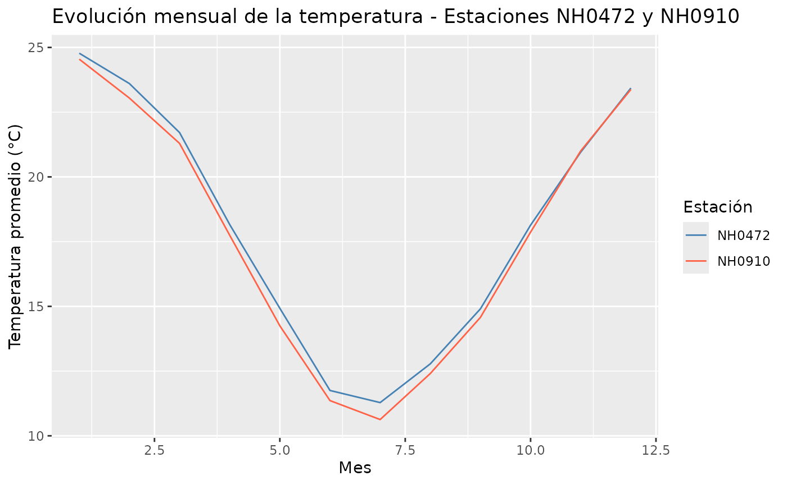

Paquete meteorológico: queRemosapRobar
Source:vignettes/vineta_queRemosapRobar.Rmd
vineta_queRemosapRobar.RmdIntroducción
El paquete queRemosapRobar proporciona herramientas para
la lectura, estructuración, análisis y visualización de datos
meteorológicos provenientes de estaciones de medición. Esta viñeta
muestra un flujo de trabajo básico utilizando las funciones principales
del paquete:
-
Lectura e Importación de Datos
(
lectura_datos) - Datos incluidos en el paquete
- Integración y combinación de datasets
-
Conteo de Observaciones Válidas
(
conteo_obs_temp) -
Resumen Estadístico de Temperatura
(
tabla_resumen_temperatura) -
Temperaturas Extremas por Estación
(
extremos_temperatura_estacion) -
Temperatura Promedio Anual
(
temperatura_promedio_anual) -
Visualización de la Evolución Mensual
(
grafico_temperatura_mensual)
Lectura e Importación de Datos
La función lectura_datos() permite descargar e importar
un archivo CSV con mediciones climáticas a partir del identificador de
la estación. Si el archivo ya existe en tu equipo local, lo lee
directamente. Este ejemplo no se ejecuta al construir la viñeta porque
requiere conexión a internet; el resto del flujo usa los datos que ya
vienen incluidos en el paquete (estacion_472 y
estacion_910).
# Ejemplo de lectura para la estación "NH0437"
datos_clima <- lectura_datos(id = "NH0437", ruta = "NH0437.csv")
# Inspección básica de los datos cargados
head(datos_clima)Datos incluidos en el paquete
El paquete queRemosapRobar incluye tres conjuntos de
datos incorporados de forma nativa, listos para usar en cuanto se carga
la librería con library(queRemosapRobar):
| Objeto | Descripción |
|---|---|
metadatos |
Información descriptiva de 258 estaciones meteorológicas: nombre, tipo, localidad, provincia, coordenadas, altura y período de registro (11 variables). |
estacion_472 |
Registros diarios de la estación NH0472: temperaturas, humedad, viento, precipitaciones, radiación y otras variables agrometeorológicas (35 variables). |
estacion_910 |
Registros diarios de la estación NH0910, con las mismas
35 variables que estacion_472. |
Para consultar la documentación detallada y la estructura de cada variable, podés ejecutar en la consola
?metadatos,?estacion_472o?estacion_910.
Integración y combinación de datasets
Un caso de uso habitual en análisis meteorológico consiste en
unificar los registros diarios provenientes de distintas estaciones de
medición y cruzarlos posteriormente con la tabla descriptiva de
metadatos.
1. Apilar mediciones con rbind()
Como estacion_472 y estacion_910 comparten
exactamente la misma estructura de 35 columnas, podemos combinarlas
verticalmente de forma limpia y eficiente utilizando
rbind() de R base:
# Apilamos los registros diarios de ambas estaciones
datos_diarios_unificados <- rbind(estacion_472, estacion_910)2. Cruzar con metadatos según el objetivo del análisis
Una vez unificados los registros diarios, podemos enriquecer la información asociando los metadatos de cada estación mediante la columna común id. Según la estrategia de análisis, se pueden aplicar dos tipos de uniones:
Opción A: Unión completa con full_join() (Recomendado) Conserva la totalidad de los registros de ambas tablas. Si una estación figura en los metadatos pero no posee registros diarios asociados (o viceversa), se mantendrá en el dataset resultante rellenando los campos vacíos con NA. Es la alternativa ideal para preservar la integridad de los datos sin perder información.
# Conserva todas las filas y metadatos disponibles
datos_completos <- datos_diarios_unificados |>
full_join(metadatos, by = "id")Opción B: Unión interna con inner_join() (Filtrado de volumen) Retiene únicamente las filas cuyas estaciones estén presentes de forma simultánea en ambas tablas. Es una excelente opción cuando se busca reducir el volumen de datos de trabajo o descartar registros huérfanos sin mediciones válidas.
# Retiene únicamente las coincidencias exactas entre tablas
datos_filtrados <- datos_diarios_unificados |>
inner_join(metadatos, by = "id")Conteo de Observaciones Válidas
Para verificar la calidad y disponibilidad de los datos registrados a
distintas alturas o profundidades por cada estación, utilizamos la
función conteo_obs_temp():
# Calcular el conteo de observaciones válidas
conteo_obs <- conteo_obs_temp(datos_diarios_unificados)
# Mostrar el resultado
conteo_obs
#> # A tibble: 2 × 4
#> id temp_150cm temp_5cm temp_10cm_media
#> <chr> <int> <int> <int>
#> 1 NH0472 20359 15504 0
#> 2 NH0910 15506 0 0Resumen Estadístico de Temperatura
Con la función tabla_resumen_temperatura(), podemos
obtener una tabla agrupada por estación (id) que calcula la
temperatura promedio, mínima y máxima (a 150 cm de altura):
# Cálculo de tabla resumen
resumen_temp <- tabla_resumen_temperatura(datos_diarios_unificados)
# Mostrar el resultado
resumen_temp
#> # A tibble: 2 × 4
#> id temp_promedio temp_minima temp_maxima
#> <chr> <dbl> <dbl> <dbl>
#> 1 NH0472 18.0 0.55 34.8
#> 2 NH0910 17.7 0 35.2Temperaturas Extremas por Estación
La función extremos_temperatura_estacion() permite
identificar los valores mínimos y máximos absolutos registrados a
diferentes alturas, facilitando la detección de eventos térmicos
destacados:
# Cálculo de temperaturas extremas
extremos_estacion <- extremos_temperatura_estacion(datos_diarios_unificados)
# Mostrar el resultado
extremos_estacion
#> # A tibble: 2 × 5
#> id temp_minima_150cm temp_maxima_150cm temp_minima_50cm temp_minima_5cm
#> <chr> <dbl> <dbl> <dbl> <dbl>
#> 1 NH0472 -8 42.1 -8 NA
#> 2 NH0910 -8.5 43 NA NATemperatura Promedio Anual
Si nuestro objetivo es realizar un seguimiento a mayor escala
temporal, podemos extraer los años a partir de las fechas y calcular la
temperatura de abrigo promedio anual por estación mediante
temperatura_promedio_anual():
# Cálculo del promedio anual
promedio_anual <- temperatura_promedio_anual(datos_diarios_unificados)
# Mostrar el resultado
promedio_anual
#> # A tibble: 100 × 3
#> id anio temp_promedio
#> <chr> <dbl> <dbl>
#> 1 NH0472 1961 17.0
#> 2 NH0472 1962 17.1
#> 3 NH0472 1963 17.8
#> 4 NH0472 1964 17.5
#> 5 NH0472 1965 17.3
#> 6 NH0472 1966 17.1
#> 7 NH0472 1967 17.5
#> 8 NH0472 1968 17.8
#> 9 NH0472 1969 18.0
#> 10 NH0472 1970 17.8
#> # ℹ 90 more rowsVisualización de la Evolución Mensual
Para analizar el comportamiento temporal de la temperatura a lo largo
del año, utilizamos grafico_temperatura_mensual(). Esta
función genera un gráfico de líneas construido sobre
ggplot2.
# Generar el gráfico mensual de la estación
grafico_temperatura_mensual(
data_frame = datos_diarios_unificados,
colores = c("steelblue", "tomato"),
titulo = "Evolución mensual de la temperatura - Estaciones NH0472 y NH0910"
)